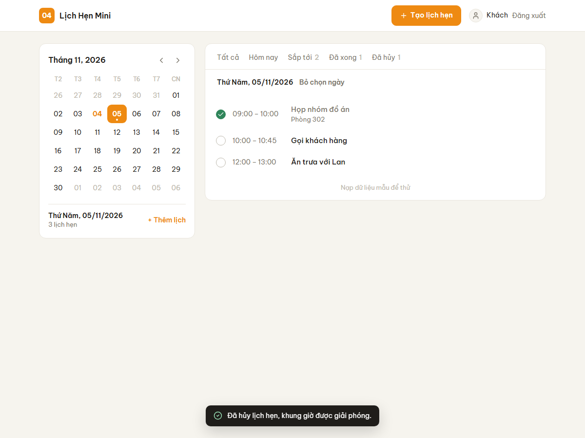
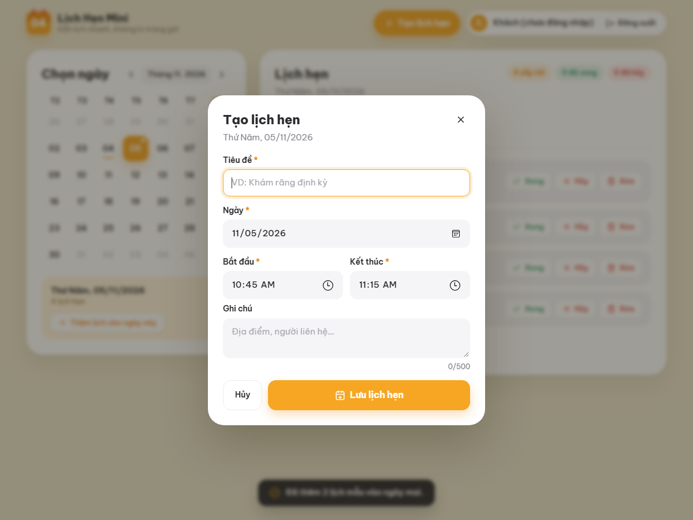
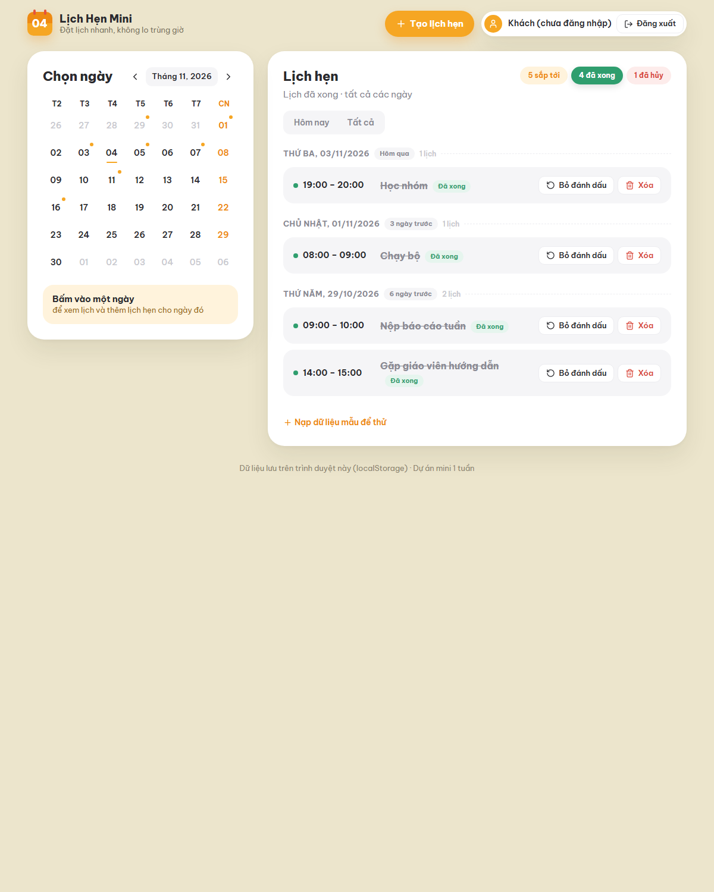

Giới thiệu dự án
Website đặt và quản lý lịch hẹn cá nhân, tự động chặn lịch trùng giờ và gợi ý khung giờ trống gần nhất. Dự án mini thực hiện trong 1 tuần.
- 1. Vấn đề
- 2. Mục tiêu & kết quả
- 3. Use case
- 4. Kiểm tra trùng giờ
- 5. Thiết kế
- 6. Công nghệ
- 7. Kiểm thử
- 8. Ngoài phạm vi
- 9. Tự đánh giá
1. Vấn đề cần giải quyết
Lịch hẹn cá nhân thường được ghi rải rác (giấy, tin nhắn, ghi chú điện thoại) nên rất dễ hẹn hai việc vào cùng một giờ mà không biết. Các ứng dụng lịch lớn thì nặng so với nhu cầu cá nhân và mặc định vẫn cho tạo sự kiện chồng giờ.
Lịch Hẹn Mini tập trung vào đúng một việc: ghi lịch hẹn nhanh và không cho phép hai lịch chồng lên nhau. Khi bị trùng, ứng dụng chỉ ra lịch đang chiếm giờ và đề xuất khung trống gần nhất.
2. Mục tiêu và kết quả đạt được
| Yêu cầu của đề | Kết quả | |
|---|---|---|
| Form tạo lịch: tiêu đề, ngày giờ, ghi chú | Có thêm giờ kết thúc, vì không có khoảng thời gian thì không kiểm tra trùng được. Form mở dạng popup từ nút "Tạo lịch hẹn" hoặc từ một ngày trên lịch. | Đạt |
| Danh sách lịch hẹn theo ngày | Lịch tháng để chọn ngày (ngày có hẹn được đánh dấu chấm); danh sách nhóm theo ngày; tab lọc Tất cả / Hôm nay / Sắp tới / Đã xong / Đã hủy. | Đạt |
| Đánh dấu đã xong / hủy | Có thêm khôi phục, bỏ đánh dấu, xóa (có xác nhận). Thao tác nhanh trên từng dòng hoặc trong popup chi tiết. | Đạt |
| Kiểm tra trùng giờ | Chặn lịch trùng, liệt kê lịch bị trùng, gợi ý giờ trống. Kiểm tra cả khi khôi phục lịch đã hủy. | Đạt |
| Test case cho tạo lịch trùng | 13 unit test riêng cho tạo lịch trùng (tổng 52 unit test), 37 test end-to-end trên trình duyệt, 33 test thủ công. | Đạt |
| Đăng nhập (khuyến nghị social login) | Đăng nhập Google; mỗi tài khoản có dữ liệu riêng. Có chế độ khách để dùng thử. | Đạt |
| Deploy miễn phí | Vercel, tự động deploy mỗi lần đẩy code lên nhánh main. | Đạt |
3. Use case
Một tác nhân là người dùng; Google chỉ tham gia ở bước đăng nhập.

| Use case | Mô tả ngắn |
|---|---|
| Đăng nhập Google / dùng thử | Đăng nhập bằng tài khoản Google hoặc vào chế độ khách. Mỗi tài khoản thấy danh sách lịch riêng. |
| Tạo lịch hẹn | Nhập tiêu đề, ngày, giờ bắt đầu – kết thúc, ghi chú. Luôn đi kèm kiểm tra dữ liệu hợp lệ và kiểm tra trùng giờ; nếu trùng thì mở rộng sang gợi ý khung giờ trống. |
| Xem danh sách | Chọn một ngày trên lịch tháng, hoặc lọc theo tab trạng thái. |
| Xem chi tiết lịch hẹn | Popup hiển thị trạng thái, ngày, giờ, thời lượng, ghi chú; từ đây có thể đánh dấu xong, hủy, khôi phục, xóa. |
| Khôi phục lịch đã hủy | Đưa lịch đã hủy về trạng thái sắp tới; phải kiểm tra trùng giờ lại vì khung giờ có thể đã bị lịch khác chiếm. |
Luồng chính (chạy end-to-end)
- Người dùng bấm Tạo lịch hẹn (hoặc chọn một ngày trên lịch → + Thêm lịch). Popup mở với ngày và khung trống 30 phút đầu tiên trong ngày đã điền sẵn.
- Nhập thông tin, bấm Lưu. Hệ thống kiểm tra dữ liệu; lỗi hiện ngay dưới từng ô.
- Hệ thống kiểm tra trùng giờ với các lịch đang hoạt động.
- Không trùng → lưu, đóng popup, lịch xuất hiện trong danh sách và có chấm trên lịch tháng.
- Trùng → không lưu, liệt kê lịch bị trùng, tô vàng lịch đó trong danh sách, hiện nút Dùng giờ trống gần nhất.
- Đến hẹn, người dùng đánh dấu Đã xong hoặc Hủy (hủy sẽ giải phóng khung giờ).
4. Cách kiểm tra trùng giờ
Mỗi lịch là một khoảng thời gian nửa mở [bắt đầu, kết thúc). Hai lịch trùng nhau khi và chỉ khi:
bắt_đầu_1 < kết_thúc_2 và bắt_đầu_2 < kết_thúc_1Một điều kiện này bao trọn mọi kiểu chồng giờ, và vì khoảng nửa mở nên hai lịch nối tiếp nhau (09:00–10:00 rồi 10:00–11:00) không bị coi là trùng. Ví dụ với lịch có sẵn 09:00–10:00:
Các trường hợp khó đã xử lý
- Khôi phục lịch đã hủy: hủy lịch A → đặt lịch B vào đúng giờ đó → khôi phục A. Nếu không kiểm tra lại thì A và B sẽ trùng. Ứng dụng kiểm tra trùng mỗi khi đưa một lịch về trạng thái "sắp tới".
- Chỉ lịch đang hoạt động mới giữ chỗ: lịch đã hủy giải phóng khung giờ; lịch đã xong cũng không chặn.
- Ngày không tồn tại như 30/02: JavaScript tự "lăn" sang 02/03, nên ứng dụng tự kiểm tra lại từng thành phần ngày giờ.
- Gợi ý giờ trống nhảy qua cả chuỗi lịch liền nhau cho tới khi tìm được khung đủ dài.
- Lịch qua nửa đêm (23:00–01:00) được so sánh bằng mốc thời gian đầy đủ nên vẫn đúng.

5. Thiết kế
Dữ liệu gồm hai thực thể: User (từ Google hoặc tài khoản khách) và Appointment. Phần logic nghiệp vụ được tách thành module thuần, không phụ thuộc giao diện, để kiểm thử tự động được.


6. Công nghệ và lý do chọn
| HTML, CSS, JavaScript thuần | Ứng dụng chỉ có một màn hình chính; không cần framework hay bước build, deploy ở đâu cũng chạy. |
| localStorage | Dùng cá nhân, không cần server, chạy được offline. Phần lưu trữ tách riêng nên sau này đổi sang API/CSDL chỉ sửa một file. |
| Google Identity Services | Đăng nhập Google chạy hoàn toàn trên trình duyệt, chỉ cần một Client ID, không phải dựng backend. |
| node:test | Công cụ test có sẵn trong Node.js, không cần cài thêm thư viện. |
| Vercel + GitHub Actions | Deploy miễn phí, tự động; mỗi lần đẩy code thì test chạy lại. |
7. Kiểm thử
| Loại | Nội dung | Kết quả |
|---|---|---|
| Unit test | Kiểm tra dữ liệu, trùng giờ (13 case riêng cho tạo lịch trùng), gợi ý giờ trống, đổi trạng thái, lịch tháng, đăng nhập | 52/52 đạt |
| End-to-end | Điều khiển trình duyệt thật đi qua toàn bộ luồng chính; chạy cả trên bản đã deploy | 37/37 đạt |
| Thủ công | 33 bước kiểm thử có kết quả mong đợi | 30 đạt · 3 chờ test với tài khoản Google |
Danh sách chi tiết: docs/TEST_CASES.md
8. Ngoài phạm vi
Những phần dưới đây được chủ động không làm để luồng chính chạy trọn vẹn trong 1 tuần:
- Gửi email nhắc hẹn, tích hợp Google Calendar (đề bài ghi rõ không cần).
- Đồng bộ lịch giữa nhiều thiết bị: dữ liệu đang lưu trên trình duyệt, muốn đồng bộ phải có backend.
- Sửa lịch hẹn đã tạo: hiện xóa rồi tạo lại; phần kiểm tra trùng cho việc sửa đã sẵn sàng trong code.
- Lịch lặp lại (hằng tuần…), chia sẻ lịch cho người khác, chế độ xem tuần dạng lưới.
9. Tự đánh giá
Điểm mạnh
- Logic trùng giờ có quy tắc rõ ràng và có test cho từng quy tắc.
- Xử lý được trường hợp khó: khôi phục lịch đã hủy khi giờ đã bị chiếm.
- Không chỉ báo lỗi mà còn gợi ý giờ trống.
- Ba lớp kiểm thử, có CI; không cần cài thư viện nào để chạy.
Điểm yếu
- Dữ liệu chỉ nằm trên một trình duyệt; xóa dữ liệu trình duyệt là mất.
- Chưa sửa được lịch đã tạo, chưa xuất/nhập dữ liệu.
- Đăng nhập chỉ để tách dữ liệu, không phải cơ chế bảo mật.
Nếu có thêm 1 tuần
- Thêm chức năng sửa lịch hẹn.
- Xuất/nhập lịch dạng
.icsđể sao lưu. - Thêm backend (Firestore hoặc API + SQLite) để đồng bộ nhiều thiết bị.
- Chế độ xem tuần dạng lưới, kéo thả để đổi giờ.
Bài học rút ra
- Làm rõ đề trước khi code: "ngày giờ" phải là một khoảng thời gian thì mới kiểm tra trùng được.
- Viết test cho trường hợp biên giúp phát hiện lỗi thiết kế (lỗi khôi phục lịch gây trùng).
- Khi một tính năng có vẻ quá lớn, tìm phiên bản tối thiểu trước khi cắt bỏ (đăng nhập Google không cần backend).
- Giao diện rối thường do một thao tác xuất hiện ở nhiều nơi và quá nhiều màu, không phải do thiếu trang trí.
Ảnh chụp màn hình




Tài liệu đầy đủ trong mã nguồn: README · Thiết kế · Quyết định kỹ thuật · Kế hoạch · Nhật ký